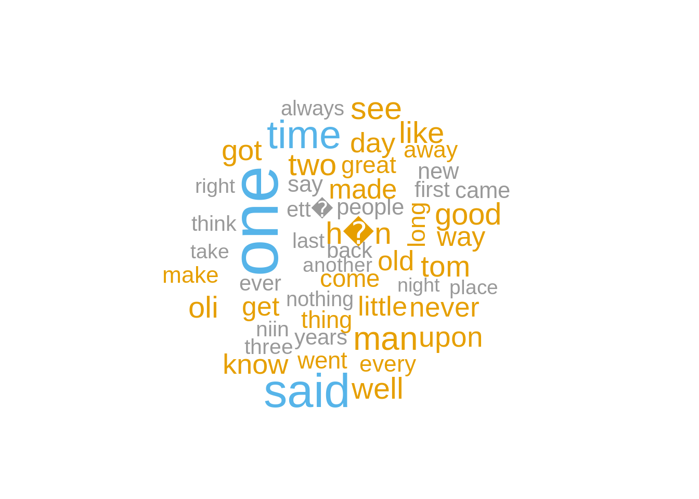
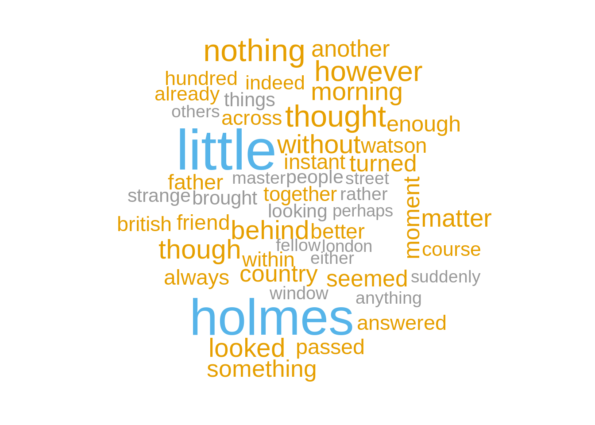
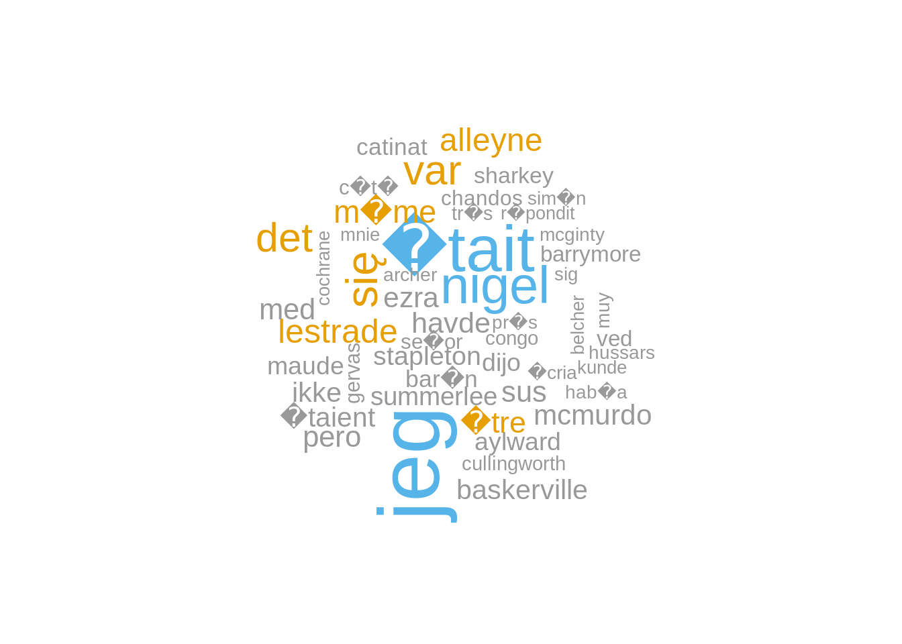

10 Text mining with sparklyr
For this example, there are two files that will be analyzed. They are both the full works of Sir Arthur Conan Doyle and Mark Twain. The files were downloaded from the Gutenberg Project site via the gutenbergr package. Intentionally, no data cleanup was done to the files prior to this analysis. See the appendix below to see how the data was downloaded and prepared.
## [1] "THE RETURN OF SHERLOCK HOLMES,"
## [2] ""
## [3] "A Collection of Holmes Adventures"
## [4] ""
## [5] ""
## [6] "by Sir Arthur Conan Doyle"
## [7] ""
## [8] ""
## [9] ""
## [10] ""
## [11] "CONTENTS:"
## [12] ""
## [13] " The Adventure Of The Empty House"
## [14] ""
## [15] " The Adventure Of The Norwood Builder"
## [16] ""
## [17] " The Adventure Of The Dancing Men"
## [18] ""
## [19] " The Adventure Of The Solitary Cyclist"
## [20] ""
## [21] " The Adventure Of The Priory School"
## [22] ""
## [23] " The Adventure Of Black Peter"
## [24] ""
## [25] " The Adventure Of Charles Augustus Milverton"
## [26] ""
## [27] " The Adventure Of The Six Napoleons"
## [28] ""
## [29] " The Adventure Of The Three Students"
## [30] ""10.1 Data Import
Read the book data into Spark
Load the
sparklyrlibraryOpen a Spark session
## Re-using existing Spark connection to localUse the
spark_read_text()function to read the mark_twain.txt file, assign it to a variable calledtwainUse the
spark_read_text()function to read the arthur_doyle.txt file, assign it to a variable calleddoyle
10.2 Tidying data
Prepare the data for analysis
Load the
dplyrlibraryAdd a column to
twainnamedauthorwith a value of “twain”. Assign it to a new variable calledtwain_idAdd a column to
doylenamedauthorwith a value of “doyle”. Assign it to a new variable calleddoyle_idUse
sdf_bind_rows()to append the two files together in a variable calledbothPreview
both## # Source: spark<?> [?? x 2] ## line author ## <chr> <chr> ## 1 "THE RETURN OF SHERLOCK HOLMES," doyle ## 2 "" doyle ## 3 "A Collection of Holmes Adventures" doyle ## 4 "" doyle ## 5 "" doyle ## 6 "by Sir Arthur Conan Doyle" doyle ## 7 "" doyle ## 8 "" doyle ## 9 "" doyle ## 10 "" doyle ## # … with more rowsFilter out empty lines into a variable called
all_linesUse Hive’s regexp_replace to remove punctuation, assign it to the same
all_linesvariable
10.3 Transform the data
Use feature transformers to make additional preparations
Use
ft_tokenizer()to separate each word. in the line. Set theoutput_colto “word_list”. Assign to a variable calledword_listRemove “stop words” with the
ft_stop_words_remover()transformer. Set theoutput_colto “wo_stop_words”. Assign to a variable calledwo_stopUn-nest the tokens inside wo_stop_words using
explode(). Assign to a variable calledexplodedSelect the word and author columns, and remove any word with less than 3 characters. Assign to
all_wordsCache the
all_wordsvariable usingcompute()
10.4 Data Exploration
Used word clouds to explore the data
Create a variable with the word count by author, name it
word_countFilter
word_coutto only retain “twain”, assign it totwain_mostUse
wordcloudto visualize the top 50 words used by Twaintwain_most %>% head(50) %>% collect() %>% with(wordcloud::wordcloud( word, n, colors = c("#999999", "#E69F00", "#56B4E9","#56B4E9")) )
Filter
word_coutto only retain “doyle”, assign it todoyle_mostUsed
wordcloudto visualize the top 50 words used by Doyle that have more than 5 charactersdoyle_most %>% filter(nchar(word) > 5) %>% head(50) %>% collect() %>% with(wordcloud::wordcloud( word, n, colors = c("#999999", "#E69F00", "#56B4E9","#56B4E9") ))
Use
anti_join()to figure out which words are used by Doyle but not Twain. Order the results by number of words.Use
wordcloudto visualize top 50 records in the previous stepdoyle_unique %>% head(50) %>% collect() %>% with(wordcloud::wordcloud( word, n, colors = c("#999999", "#E69F00", "#56B4E9","#56B4E9")) )
Find out how many times Twain used the word “sherlock”
## # Source: spark<?> [?? x 1] ## n ## <dbl> ## 1 47Against the
twainvariable, use Hive’s instr and lower to make all ever word lower cap, and then look for “sherlock” in the line## [1] "late sherlock holmes, and yet discernible by a member of a race charged" ## [2] "sherlock holmes." ## [3] "\"uncle sherlock! the mean luck of it!--that he should come just" ## [4] "another trouble presented itself. \"uncle sherlock 'll be wanting to talk" ## [5] "flint buckner's cabin in the frosty gloom. they were sherlock holmes and" ## [6] "\"uncle sherlock's got some work to do, gentlemen, that 'll keep him till" ## [7] "\"by george, he's just a duke, boys! three cheers for sherlock holmes," ## [8] "he brought sherlock holmes to the billiard-room, which was jammed with" ## [9] "of interest was there--sherlock holmes. the miners stood silent and" ## [10] "the room; the chair was on it; sherlock holmes, stately, imposing," ## [11] "\"you have hunted me around the world, sherlock holmes, yet god is my" ## [12] "\"if it's only sherlock holmes that's troubling you, you needn't worry" ## [13] "they sighed; then one said: \"we must bring sherlock holmes. he can be" ## [14] "i had small desire that sherlock holmes should hang for my deeds, as you" ## [15] "\"my name is sherlock holmes, and i have not been doing anything.\"" ## [16] "late sherlock holmes, and yet discernible by a member of a race charged" ## [17] "plus fort que sherlock holmes" ## [18] "sherlock holmes entre en scene" ## [19] "sherlock holmes" ## [20] "--l'oncle sherlock! quelle guigne!" ## [21] "bien! cette fois sherlock sera tres embarrasse; il manquera de preuve et" ## [22] "--l'oncle sherlock va vouloir, ce soir, causer avec moi de notre" ## [23] "passage etroit sur la chambre de sherlock holmes; ils s'y embusquerent" ## [24] "d'archy, il ne peut etre nullement compare au genie de sherlock holmes," ## [25] "flint buckner. c'etait sherlock holmes et son neveu." ## [26] "--messieurs, mon oncle sherlock a un travail pressant a faire qui le" ## [27] "--mes amis! trois vivats a sherlock holmes, le plus grand homme qui ait" ## [28] "mettaient de coeur a leur reception. arrive dans sa chambre, sherlock" ## [29] "il introduisit sherlock holmes dans la salle de billard qui etait comble" ## [30] "de mineurs, tous impatients de le voir arriver. sherlock commanda les" ## [31] "sherlock holmes. les mineurs se tenaient en demi-cercle en observant un" ## [32] "sherlock au milieu de nous? dit ferguson." ## [33] "arracher; quand sherlock y met la main, il faut qu'ils parlent, qu'ils" ## [34] "plus complexe; sherlock va pouvoir etaler devant nous son art et sa" ## [35] "regardant comment sherlock procede. mais non, au lieu de cela, il a" ## [36] "sherlock holmes etait assis sur cette chaise, l'air grave, imposant et" ## [37] "sherlock holmes leva la main pour concentrer sur lui l'attention du" ## [38] "pas baisse pavillon devant sherlock holmes.\" la serenite de ce dernier" ## [39] "objets, il y a une heure a peine pendant que maitre sherlock holmes se" ## [40] "sherlock regardait avec la volonte bien arretee de conserver son" ## [41] "silence complet qui suivit, maitre sherlock prit la parole, disant avec" ## [42] "--vous m'avez pourchasse dans tout l'univers, sherlock holmes, et" ## [43] "--si c'est uniquement sherlock holmes qui vous inquiete, inutile de vous" ## [44] "\"elles soupirerent, puis l'une dit: \"il faut que nous amenions sherlock" ## [45] "d'assister de sang-froid a la pendaison de sherlock holmes. j'avais" ## [46] "--je m'appelle sherlock holmes; je n'ai rien a me reprocher." ## [47] "plus fort que sherlock holmes"Close Spark session
Most of these lines are in a short story by Mark Twain called A Double Barrelled Detective Story. As per the Wikipedia page about this story, this is a satire by Twain on the mystery novel genre, published in 1902.